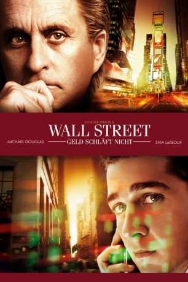

#978 Wall Street 2 - Geld schläft nicht
Alternativ: Wall Street: Money Never Sleeps
 
 IMDB-Wertung: 6.2 / 10
IMDB-Wertung: 6.2 / 10  Metascore: 59
Metascore: 59 
Nach dem Ende seiner langjährigen Haftstrafe stellt Gekko fest, dass er nicht mehr Teil der Wall Street Welt ist, die er einst dominierte. Um die kaputte Beziehung zu seiner Tochter Winnie wieder herzustellen, verbündet er sich mit deren Verlobten Jacob, einem jungen Investment Banker. Dieser beginnt in Gordon Gekko eine Art Vaterfigur zu sehen. Aber Jacob muss schon bald auf schmerzliche Weise lernen, dass Gekko immer noch ein Meister der Manipulation und keineswegs gewillt ist, seinem früheren Lebenswandel abzuschwören...
Jahr: 2010
Dauer: 133 Minuten
FSK:
Land: USA Studio: 20th Century FoxTonspuren: DTS - ,
Untertitel: Deutsch,
Auflösung: 1080p (1920x816) Größe: 8744 MB
Genre: Drama
Regisseur:  Oliver Stone
Oliver Stone
Drehbuch: Allan Loeb, Stephen Schiff, Stanley Weiser, Oliver Stone
Soundtrack: Craig Armstrong
Darsteller:
Datei: X:\2-Dilogie(N-Z)\Wall Street\Wall Street 2 - Geld schläft nicht (2010, FSK, 1920x816).mkv seit 01.05.2015
Festplatte: HD Collection-2(A-Z)-3(A-M)
 Alle Filme aus Gruppe '2-Dilogie(N-Z)\Wall Street'
Alle Filme aus Gruppe '2-Dilogie(N-Z)\Wall Street'
- Wall Street 1
- Wall Street 2 - Geld schläft nicht (der aktuelle Film)